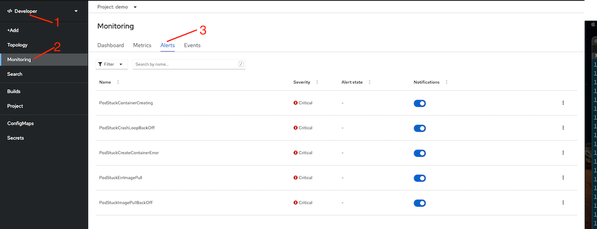
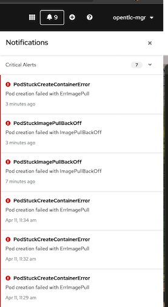
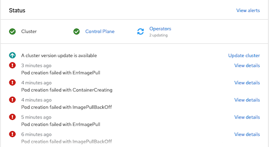
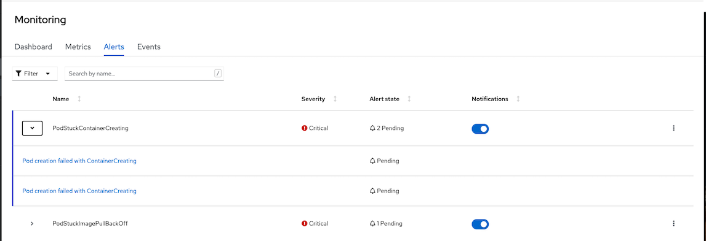
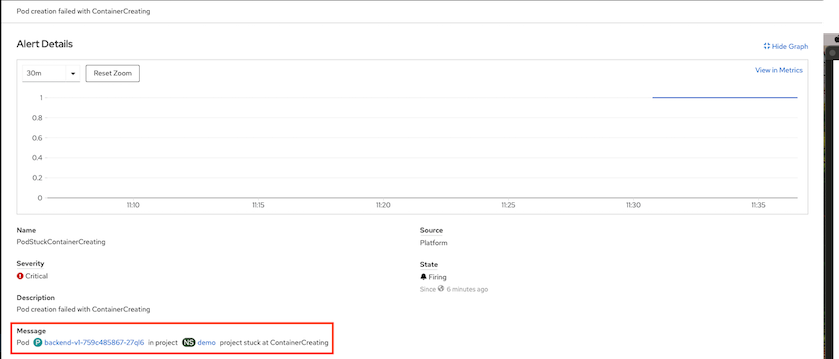

Custom Monitoring
Monitor for Pod Creation
Create custom alerts to monitor for pod creating status with PrometheusRule pod-stuck-alerts.yaml
This PrometheusRule will sending alerts if pod status
- PodStuckContainerCreating for 2 minutes
- PodStuckImagePullBackOff for 30 seconds
- PodStuckErrImagePull for 2 minuts
- PodStuckCrashLoopBackOff for 2 minutes
- PodStuckCreateContainerError for 2 minutes
apiVersion: monitoring.coreos.com/v1 kind: PrometheusRule metadata: name: pod-stuck spec: groups: - name: PodStuck rules: - alert: PodStuckContainerCreating annotations: description: Pod creation failed with ContainerCreating message: Pod in project project stuck at ContainerCreating expr: kube_pod_container_status_waiting_reason{reason="ContainerCreating"} == 1 for: 2m labels: severity: critical - alert: PodStuckImagePullBackOff annotations: description: Pod creation failed with ImagePullBackOff message: Pod in project project stuck at ImagePullBackOff expr: kube_pod_container_status_waiting_reason{reason="ImagePullBackOff"} == 1 for: 2m labels: severity: critical - alert: PodStuckErrImagePull annotations: description: Pod creation failed with ErrImagePull message: Pod in project project stuck at ErrImagePull expr: kube_pod_container_status_waiting_reason{reason="ErrImagePull"} == 1 for: 30s labels: severity: critical - alert: PodStuckCrashLoopBackOff annotations: description: Pod creation failed with ImagePullBackOff message: Pod in project project stuck at CrashLoopBackOff expr: kube_pod_container_status_waiting_reason{reason="CrashLoopBackOff"} == 1 for: 2m labels: severity: critical - alert: PodStuckCreateContainerError annotations: description: Pod creation failed with ErrImagePull message: Pod in project project stuck at CreateContainerError expr: kube_pod_container_status_waiting_reason{reason="CreateContainerError"} == 1 for: 2m labels: severity: critical
Cluster Level
Create PrometheusRule in namespace openshift-monitoring
oc create -f manifests/pod-stuck-alerts.yaml -n openshift-monitoringCheck alert rules

User Workload Monitoring
If user workload monitoring is enabled. Prometheus Rule can be created at project level.
oc create -f manifests/pod-stuck-alerts.yaml -n demoAdd following label to deploy rules to Thanos Ruler
metadata: name: pod-stuck labels: openshift.io/prometheus-rule-evaluation-scope: leaf-prometheusCheck for alert rules in Developer Console

Test Alert
Create following deployments. These deployments intentionally put pods into error state.
oc create -f manifests/pod-stuck -n demoCheck for result
oc get pods -n demoSample result
NAME READY STATUS RESTARTS AGE backend-v1-759c485867-27ql6 0/1 ContainerCreating 0 2m42s backend-v2-5c866fb9bf-2fzj4 0/1 CreateContainerError 0 2m40s backend-v3-cbcd9cddb-pjbvl 0/1 ImagePullBackOff 0 2m39s
Check for alerts on Notifications menu

Overview

For User Workload Monitoring

Check for details of an alert
